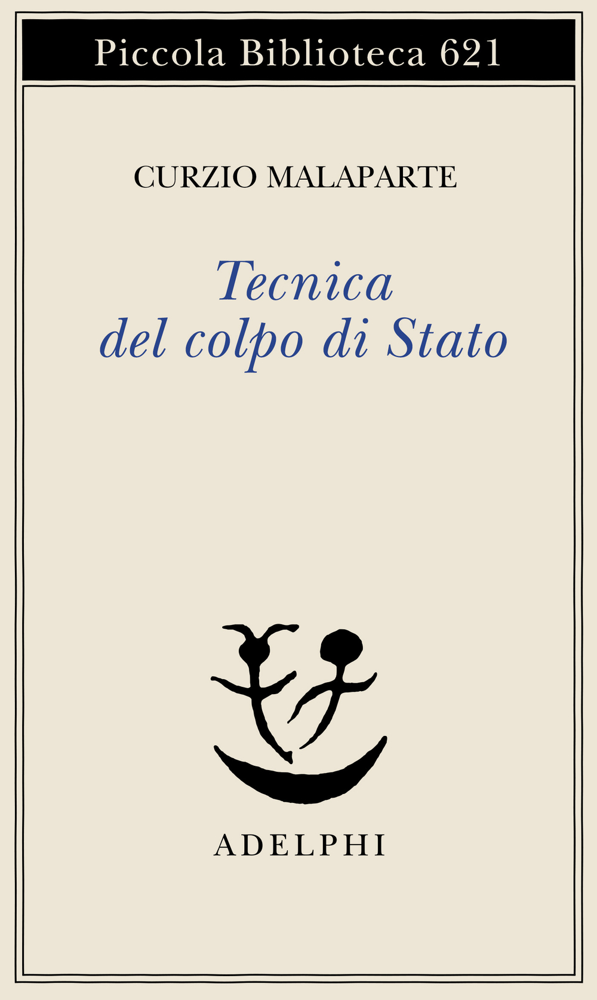
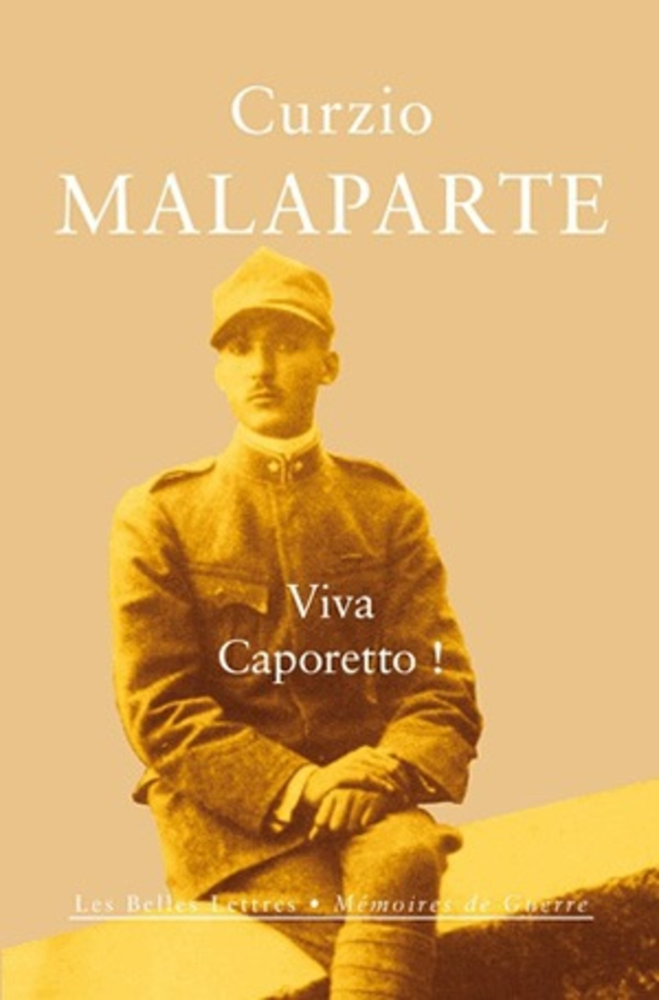
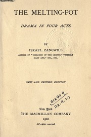
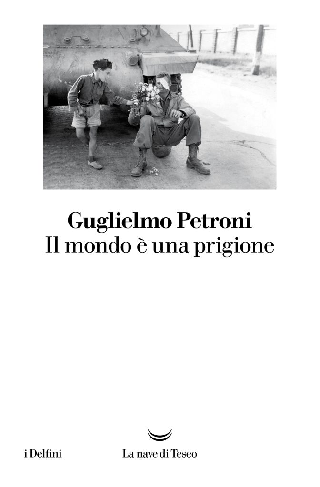
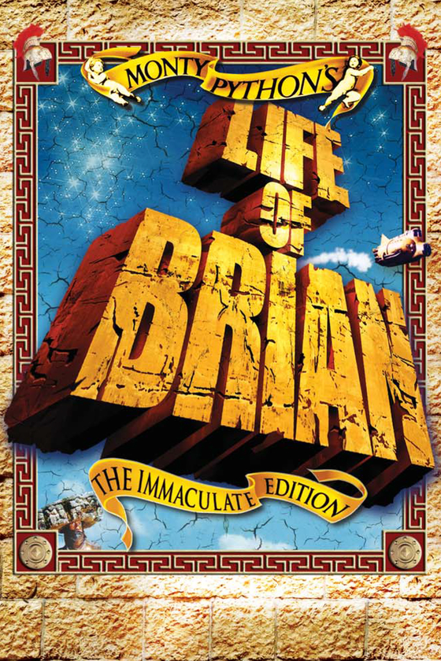

54:05 · 10 OPERE
Curzio Malaparte: Tecnica del colpo di Stato.
Il filo del discorso
La lettura di Tecnica del colpo di Stato offre al relatore un modo per interrogare il rapporto fra conquista del potere, apparati dello Stato e informazione. Il confronto iniziale con La scuola dei dittatori distingue la analisi narrativa di Silone dal racconto storico e politico di Malaparte. I passaggi su Zangwill a Firenze e sulla edizione straordinaria della Nazione diventano il centro di una riflessione sulla stampa: la libertà di pubblicare non garantisce la veridicità delle notizie. Da qui il discorso si sposta alla autonomia del giudizio e al rischio di trasformare il mondo in una prigione, attraverso Petroni e Meerloo. Nella seconda parte Dr Divago propone una propria ipotesi: accanto alla presa violenta del potere, il denaro potrebbe rendere possibile una appropriazione interna dello Stato. Il libro viene così applicato alle controversie del presente e alle misure pandemiche. La scheda distingue la testimonianza letteraria dalle ricostruzioni storiche indipendenti e mantiene attribuite al relatore le analogie politiche, le accuse e le previsioni.
I libri nel discorso

Tecnica del colpo di Stato
Copertina: Prima pubblicazione in francese, Grasset, 1931, traduzione di Juliette Bertrand; prima edizione italiana nel 1948. Copertina Adelphi, 2011, Piccola Biblioteca 621, a cura di Giorgio Pinotti, 270 pagine, ISBN 9788845926327. Non si assume che questa sia la tiratura posseduta dal relatore.
Immagine autentica dell’opera, controllata visivamente; l’edizione di riferimento non è attribuita al filmato.
Titolo e autore espliciti; libro centrale discusso lungo il contributo.
Passaggio 0:15 ↗ · Fonti e libro ↗La scuola dei dittatori
Copertina: Mondadori · Narratori Italiani 102 · prima edizione italiana riveduta, 1962
Fotografia autentica della sovraccoperta illustrata da Franco Francese, edizione Mondadori 1962; estratta senza ricompressione dal PDF del catalogo Pontremoli, pagina 49 del file, pagina 47 stampata. Il 1938 riguarda la precedente versione dell’opera, non l’esemplare fotografato. Il video non identifica questa edizione.
La scuola dei dittatori di Ignazio Silone esplicita come termine di confronto.
Passaggio 0:31 ↗ · Fonti e libro ↗
Viva Caporetto! (La rivolta dei santi maledetti)
Copertina: Opera originale del 1921, riproposta nello stesso anno come La rivolta dei santi maledetti e riveduta nel 1923. Immagine della traduzione francese di Stéphanie Laporte, Les Belles Lettres, Mémoires de Guerre 3, 17 ottobre 2012, 130 pagine, ISBN 9782251310039. Non è una copertina della prima emissione di Prato.
Immagine autentica dell’opera, controllata visivamente; l’edizione di riferimento non è attribuita al filmato.
Viva Caporetto! e anno 1921 espliciti.
Passaggio 1:40 ↗ · Fonti e libro ↗
The Melting-Pot. Drama in Four Acts
Frontespizio Macmillan 1920, esemplare University of Toronto: Dramma rappresentato nel 1908; edizione Macmillan di New York 1909. Immagine del frontespizio della New and Revised Edition, Macmillan, 1920, esemplare Robarts Library, University of Toronto, digitalizzato su Internet Archive. Non è la copertina 1909 o della edizione Broadview 2017.
Frontespizio autentico visto interamente: titolo, autore, New and Revised Edition, editore e anno 1920 leggibili, con segni bibliotecari. Provenienza e data sono riscontrate nei metadati del volume; nessun ISBN moderno attribuito allo esemplare.
Zangwill e Melting Pot espliciti; dramma, non una teoria sociologica anonima.
Passaggio 6:19 ↗ · Fonti e libro ↗
Stato e rivoluzione
Identificazione probabile
Copertina: Editori Riuniti,2021,316 pagine, a cura di Valentino Gerratana, saggio introduttivo di Michele Prospero, ISBN 9788835982043. Copertina bianca e rossa con caricatura politica di Lenin sul globo. Testo originale 1917; non è identificata l’edizione usata dal relatore.
Immagine autentica dell’opera, controllata visivamente; l’edizione di riferimento non è attribuita al filmato.
Lenin e formula sulla assenza di libertà finché esiste lo Stato, riconoscibile nel capitolo V; titolo non pronunciato.
Passaggio 13:25 ↗ · Fonti e libro ↗
L’uomo a una dimensione
Copertina: Einaudi, Piccola Biblioteca Einaudi, 1999
Copertina di un’edizione bibliografica dell’opera, con introduzione di Luciano Gallino. La citazione nel video resta probabile; questa edizione non vi è confermata.
L’uomo a una dimensione e Marcuse espliciti.
Passaggio 17:09 ↗ · Fonti e libro ↗
Il mondo è una prigione
Copertina: Testo pubblicato in Botteghe oscure nel 1948 e in volume da Mondadori nel 1949, sulla prigionia nazifascista del 1944. Copertina della ristampa La nave di Teseo, I delfini, 2025, 192 pagine, ISBN 9788834621424. La ristampa è successiva al contesto del video e non identifica il suo esemplare.
Immagine autentica dell’opera, controllata visivamente; l’edizione di riferimento non è attribuita al filmato.
Il mondo è una prigione e Guglielmo Petroni espliciti.
Passaggio 18:13 ↗ · Fonti e libro ↗
The Rape of the Mind
Identificazione probabile
Copertina: World Publishing Company · 1956 · testo inglese
Fotografia della copertina dell’edizione originale del 1956, fornita dal catalogo OpenLibrary. I segni d’usura appartengono all’esemplare fotografato. Edizione del video non accertata.
Joost Meerloo e menticidio, riconoscibile nel libro già catalogato; titolo non pronunciato.
Passaggio 19:22 ↗ · Fonti e libro ↗
Mein Kampf
Copertina: Hitler, Mein Kampf. Eine kritische Edition, Institut für Zeitgeschichte, 2016, due volumi, a cura di Christian Hartmann, Thomas Vordermayer, Othmar Plöckinger e Roman Töppel; ISBN 9783981405231.
Immagine autentica della copertina grigia dell’edizione critica dell’Institut für Zeitgeschichte. Si tratta di un’opera in due volumi: l’immagine piana di copertina non è dichiarata fotografia completa dei due volumi né edizione originale nazista. La ristampa precisa illustrata non è attribuita dal solo ISBN.
Mein Kampf e Hitler espliciti nel discorso sulla conquista interna dello Stato.
Passaggio 30:34 ↗ · Fonti e libro ↗
Monty Python’s Life of Brian (Brian di Nazareth)
Edizione homevideo: The Immaculate Edition: Film britannico del 1979 diretto da Terry Jones, prodotto da John Goldstone,94 minuti. Immagine dell’edizione home video Sony The Immaculate Edition, riprodotta nella scheda ufficiale del distributore; non una copertina libraria.
Immagine autentica Sony vista integralmente: titolo monumentale giallo Life of Brian, marchio Monty Python, sfondo blu e dicitura The Immaculate Edition. Il file fa parte della presentazione delle edizioni Blu-ray e DVD nel sito del distributore. Non è dichiarato manifesto originale del 1979, né edizione posseduta dal relatore. Immagine e crediti cinematografici sono riscontrati separatamente.
Brian di Nazareth e la scena della scarpa sono richiamati esplicitamente.
Passaggio 52:12 ↗ · Fonti e libro ↗